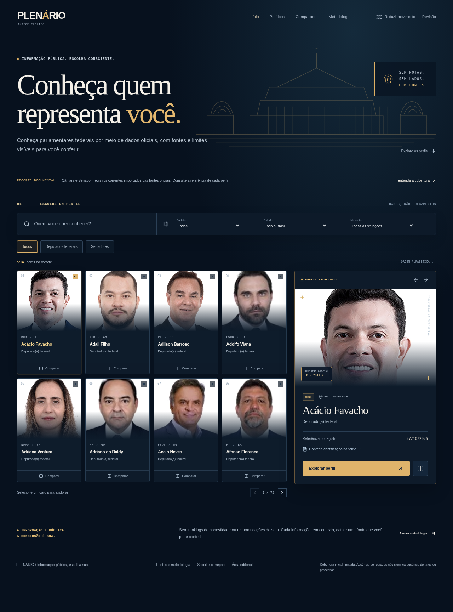
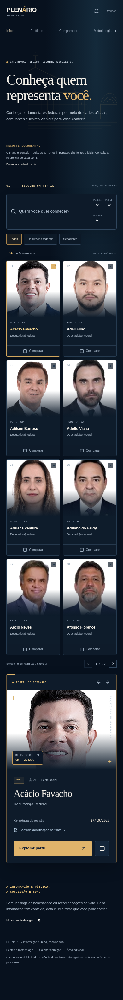
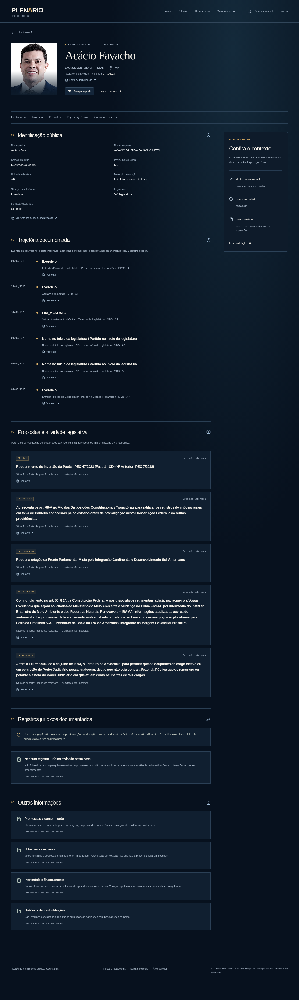
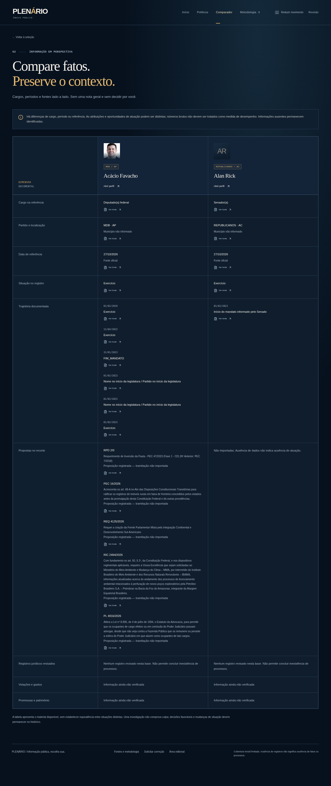
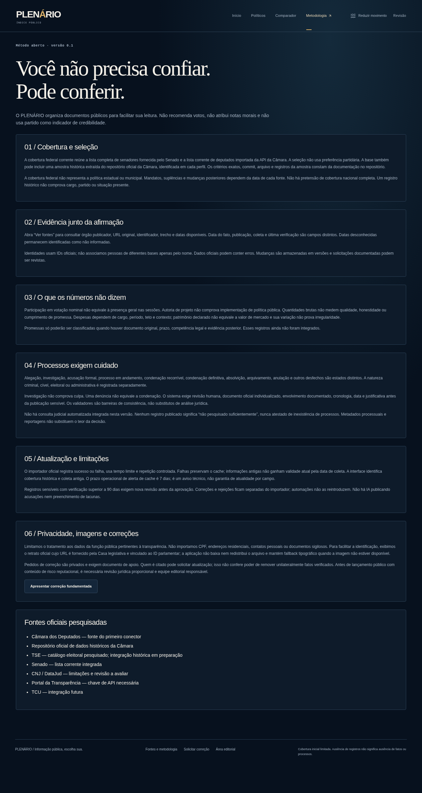

PLENÁRIOÍNDICE PÚBLICO
PRÉVIA VISUAL
INFORMAÇÃO PÚBLICA. ESCOLHA CONSCIENTE.
Conheça quem
representa você.
Capturas atuais da plataforma PLENÁRIO após o redesign editorial. Os perfis e retratos vêm dos registros oficiais já integrados.
Galeria estática das telas renderizadas: seleção, perfil detalhado, comparação e metodologia. A arte arquitetônica do hero é uma ilustração vetorial original do projeto.
01 · Tela inicial — desktop

02 · Tela inicial — mobile

03 · Perfil de Acácio Favacho

04 · Comparação

05 · Metodologia
